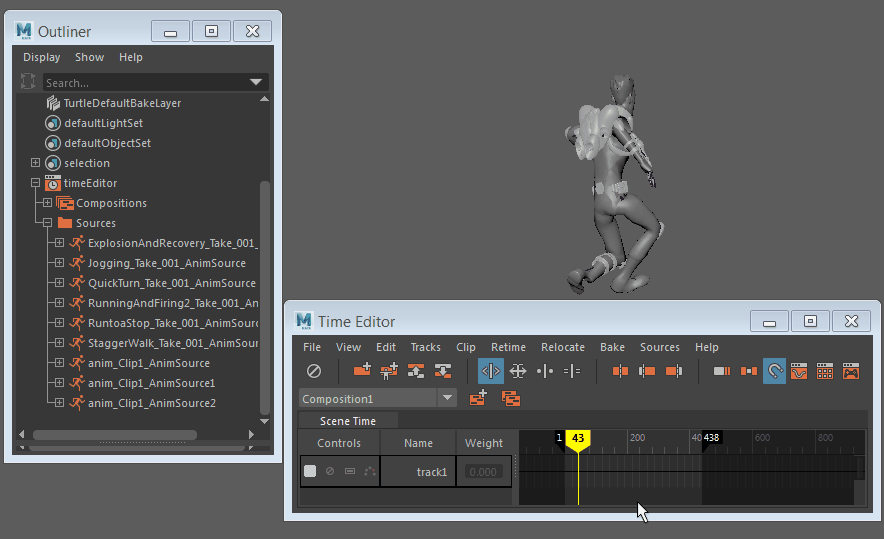

- 重定位器创建不需要的偏移
- 将重定位器指定给动画片段以匹配姿势时，默认情况下，时间编辑器会选择场景层次中的顶层对象。如果您的角色基于控制器，这会导致问题，因为您必须为主体和脚控制器（或主控制器，如果有的话）选择重定位器。重定位器需要与您操纵视口中整个角色所用的控制器相同。
- 如果选择 并打开重新定位选项(Relocate Options)窗口，则可在动画片段中选择与默认值不同的根。
- “重新定位选项”(Relocate Options)窗口可用于禁用“将默认根用于重定位器”(Use default root for relocator)选项并启用“从片段根中选择自定义重定位器根”(Choose custom relocator roots from clip roots)，使您能够在“片段根”(Clip Roots)列表中选择自定义片段根。
- 时间编辑器片段中没有动画
- 如果您已在时间编辑器中创建一个动画片段，但无任何内容移动，则可能会是由于以下几个问题：
-
- 确保您具有所有对象的动画
- 如果您已根据设置动画的对象在时间编辑器中创建动画片段，请确保已选择对象的完整层次，以便所有动画都合并到新片段中。尽管您可以在视口中选择简单的已设置动画对象并单击“从当前选择创建片段”(Create Clip from Selection)以创建动画片段，但您不知道是否已选择所有从属动画。对于具有相关属性的已设置动画的复杂对象（例如角色装备），更是如此。
- 请参见将 Maya 场景动画添加到时间编辑器和将动画导入时间编辑器。
- 无动画源
- 您需要动画源在时间编辑器中驱动对象。可以在时间编辑器的“源”(Source)菜单以及“大纲视图”(Outliner)中查看场景中的动画源。它们包含当前场景中的动画源的库。如果某个片段未由任何内容驱动，请使用鼠标中键将动画源从大纲视图拖动到片段上。

- 有关详细信息，请参见通过动画源创建片段和时间编辑器动画源。
- 已禁用时间编辑器
- 如果使用
 “禁用”(Mute)按钮禁用时间编辑器，则无法在时间编辑器中拖动动画。若要在场景中添加动画，请取消禁用时间编辑器并选择。
“禁用”(Mute)按钮禁用时间编辑器，则无法在时间编辑器中拖动动画。若要在场景中添加动画，请取消禁用时间编辑器并选择。
- 无法分割时间编辑器片段
- 应用“保持”(Hold)或“循环”(Looping)之后，片段无法分割。可以改为先将其变为组片段，然后再进行分割。请参见将多个片段合并为组片段。
- 无音频播放
- 如果时间编辑器音频片段在播放时没有发出声音，但在拖动（拖动当前时间标记(Current Time Marker)）时可听到声音，请确保在“动画控件”(Animation controls)菜单中将“播放速度”(Playback Speed)设置为“实时”(Real-time)。（通过在 Maya 时间滑块上单击鼠标右键，可访问“动画控件”(Animation controls)菜单。）
- 请参见将音频添加到时间编辑器。
- 播放预览时音频音高发生变化
-
如果在播放预览时音频播放中出现音高变化，这是因为音频文件采样率与时间编辑器默认音频速率之间存在冲突。
- 要解决此问题，请转到“动画”(Animation)首选项（在“设置”(Settings)下）的“时间编辑器”(Time Editor)部分，然后从“输入音频速率”(Input Audio Rate)菜单中选择音频文件的采样率。
 并打开重新定位选项(Relocate Options)窗口，则可在动画片段中选择与默认值不同的根。
并打开重新定位选项(Relocate Options)窗口，则可在动画片段中选择与默认值不同的根。